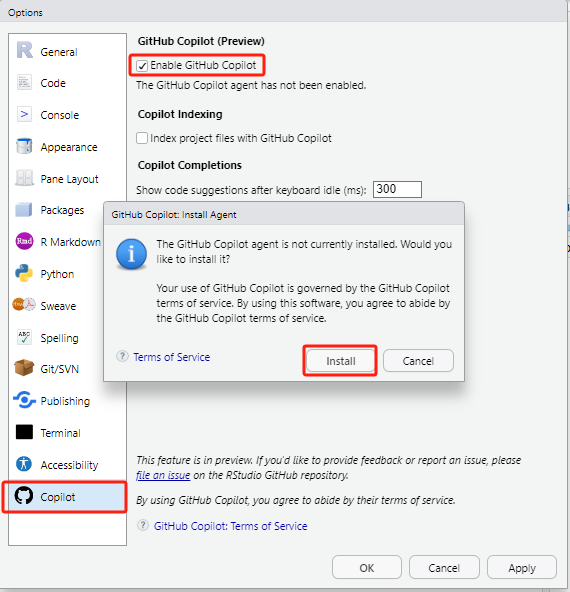

R语言学习和应对考试的个人思考

一、R语言学习¶
1，基础¶
1.1，数据类型¶
聚焦于元素。

概念：
# 1，整型
没有小数部分的数据。
# 2，浮点型
带小数位的数据。跟整型的差别在于存储单元的分配上。
# 3，字符串
字母、汉字、数字、符号等。
# 4，布尔值，True（其他，一般为1），False（0）
逻辑运算（>,<,==,&,|,~），常见于条件判别。
# 5，特殊值
`NA`（not a valueble）,`NULL`,`NaN`,`Inf/-Inf`
实践中的应用：
# 例：字符串
rename(viewers = `Viewers (millions)`,
air_date = `Air Date`)
rename(viewers1 = viewers,
air_date1 = air_date1)
# (1)作为变量直接用变量名表示，如果放在列表、向量中，需要加双引号，函数会解析为变量名；
# (2)带有特殊符号的变量，如带有空格需要加单引号或双引以表便编辑器识别为变量名。
# 例：布尔值
sum(...==...) #逻辑运算求和技巧
mutate(across(is.character, as.factor)) #类型转换
# 强烈建议以后遇到逻辑运算时大脑默认将结果转换为FALSE（0），TRUE（1），有助于理解和运用复杂的逻辑运算
# 例：特殊值
sum(...,na.rm=FALSE) # Na缺失值默认是不排除的，具体视情况而定
1.2，数据结构¶
聚焦于元素间的关系，为了提高存储和运算效率。
概念：
# 1，向量
c(1, 2, 3) # 经常写的向量
# 2，数据框：简单理解为excel表格
data.frame(
name <- c("Alice", "Bob", "Charlie")
age <- c(25, 30, 35)
height <- c(165, 175, 185)
)
实践中的应用：
为什么唯独强调向量和数据框？数据分析中太常用了。你可能不知道向量和数据框，但你一定经常写这样的代码。
data <- read_csv('C:/./.csv')
data$column1
ggplot(data) +
geom_*(aes(x,y))
我们处理的最多的就是就是结构化数据(Excel表格)，这类数据从excel导入后一般都存在了数据框中，然后我们再进行处理。
1.3，逻辑语句¶
# 1，判断语句
if(条件){
}
# 2，循环语句
for(条件){
}
# 3，条件语句
（>,<,==,&,|,~）
遇到条件语句转为布尔值，FALSE为0，True为1。
1.4，常用函数和自定义函数¶
（1）常用函数：
- 与数据类型相关，以博客内容为例

-
与数据结构相关，以博客内容为例
数据框为例：主要的就是数据框的创建、生成新的数据框、属性、索引、数据框的操作（增、删、改、查）。

实践中的应用：
# 修改数据结构中某列的数据类型
data %>%
mutate(across(is.character, as.factor))
（2）自定义函数：
# 1，function函数定义
function（）
# 2，~定义匿名函数
定义简单函数
实践中的应用：
# 1，function
squre1 <- function(x){
x^2
} # 默认返回最后一行计算结果
squre1 <- function(x){
a <- x^2
return a
} # 通过return，指定返回内容
# 2，匿名函数
result <- map(my_list, squrel)
result <- map(my_list, ~.x^.x) # .x为占位符，逐元素计算
2，包packages¶
为了专门实现某一类功能，将各种相关函数打包放在了一起。就像我们为了避免写重复代码一样，应用function()定义常用功能函数。这种借鉴他人成果避免重复 “造轮子” 的 “拿来主义” 贯穿编程始终。
2.1，内置包¶

内置函数包往往都是常用的基础功能，但要实现复杂的功能了？
2.2，第三方包：¶
随着需求越来越多，内置包内已经无法满足，于是非官方的人员编辑了各种各样的函数包，以满足自身需要。
有些包非常好用，比如R中著名的tidyverse。
tidyverse是一个R语言中的数据科学和数据处理工具集合，由一系列互相依赖的第三方包组成，包括dplyr、ggplot2、tidyr、readr等等。tidyverse的目标是提供一种一致且直观的数据处理方法，使得数据科学家和分析师能够更轻松地进行数据清洗、转换、可视化和建模等操作。
我们每次install.packages() 都是从网上下载第三方包到本地软件中，因此下载一次后就不用重复下载，这也是Rstudio中写install.packages()报错的原因之一。
使用时library() 告诉系统我们要调单这个包里的函数了，让它提前准备好，文件关闭后存在系统的包就又被“放回去了”。这就是为什么每个文件开头都要“配置环境”，先运行library()才能使用第三方包内的函数。
3，算法¶
（计算机+数学）：核心目的节省计算资源、提高计算效率、得到精确结果等。
3.1，算法思想¶
回溯：动态规划中的应用。

3.2，机器、深度学习算法¶
（1）线性回归

\[\frac1m\sum_{i=1}^m(y_i-\hat{y}_i)^2\]
核心目的：寻找一条直线方程，拟合坐标点，使得均方差损失函数最小。
这里面Loss funtion就涉及到数学原理的应用。为什么不用绝对值误差？因为用均方差可以得到一条光滑的曲线，进而微分，在寻找最优解时实现高效的运算。
（不要求掌握）关于最优解的具体计算，涉及到梯度下降算法（SDG），其中会涉及到回溯。
（2）AlexNet卷积神经网络
卷积神经网络(Convolutional Neural Networks, CNNs)算法在很大程度上推动了图像识别领域，特别是人脸识别技术的飞速发展。CNNs通过模仿人类视觉系统的处理方式，能够有效地提取和识别图像中的特征，使得它们在图像识别任务中取得了优异的性能。
（AlaxNet网络）

AlexNet (2012): 由Alex Krizhevsky等人开发的AlexNet在ILSVRC 2012中取得了压倒性的胜利，这标志着
深度学习在图像识别任务中的主导地位正式确立。
图像识别技术的快速发展大概源于：
1，硬件的发展：以GPU为代表的硬件性能的提升；
2，数据积累：深度数据化，且积累了不少数据；
3，算法改进：更高效的算法。
图像识别技术的发展促进面部识别、商品识别（电商网购）、自动驾驶（特斯拉、华为）的技术发展和应用。
（28号的小米汽车技术发布会）

这也就是我们后期会深入涉及到各种算法的原因，因为算法才是前沿发展的精华所在，也是效益的代名词！
想要了解更多，关注学委分享的资料：
二、概率论与数理统计¶
波波同学分享不少内容，在这里强烈推荐其中的概率论与数理统计、线性代数视频教程。
https://wngwai.github.io/other/Link/

高数、线代、概率论与数理统计是机器学习、深度学习的基础知识，可以就着需要和空闲时间查漏补缺。
之后的课程：都会涉及到相关知识。
| 学期 | 专业课程 |
|---|---|
| 研一下学期 | 《探索性数据分析与数据可视化》 《应用回归分析》 |
| 研二上学期 | 《机器学习与预测》 《实验设计与因果推断》 |
概率论与数理统计的内容非常多，我也有很多没有搞明白。这里只是简要介绍下我认为当前非常需要弄明白的核心概念。
1，假设检验的核心概念¶
以考试成绩为案例，假设某校的成绩满足正态分布，有学生1万人：
（1）总体分布
1万名学生的成绩分布情况。

（2）样本均值分布
样本容量为100的样本分布情况：

随机抽取10000个样本，每个样本容量为100，将样本均值作为数据绘制的直方图就是样本均值分布：

根据中心极限定理，样本均值足够多下，样本均值分布呈现正态分布，样本均值分布的均值 与总体均值μ相等。

接受域、拒绝域、置信区间都是在样本均值分布上看的。
假设检验的核心思路就是小概率反证法，从总体中抽取一个样本，样本的均值x_bar只有非常小的概率落在了样本均值分布的两侧，这两侧所代表的抽样事件被称为极端情况。
类似我连饮料的再来一瓶都没有中过，却中了彩票，要么我运气爆棚，要么我买了张假彩票（样本不来源总体），无论哪种情况，极端事件发生了，我们都认为这个样本不属于总体，这个样本中的数据可能来源于另一个学校，而我就是买到了一张假彩票。
但会不会恰恰出现了极端情况，这个样本就是来源原总体？如同我买到了一真的中奖彩票了？会的，所以有α的的概率犯去真的错误，也就是我有5%（α=5%）的概率错过成为富一代的机会。
（3）t分布
其实到了上面那步我们就该结束了，例如再次抽样，样本均值出现在两端，我们就可以说这个样本中的成绩一样不是我们学校的。这跟我们的生活经验是相符合，我们根据小孩身高估计小孩年龄、根据工龄估计输入等，身高1.7m你会排除小孩的范畴，工资2500你不会认为工龄很长。
但数学家没有止步于此，数学家想如果我不知道总体是什么分布，我该如果判这个样本是否代表极端情况发生？例如，我们不知道学校总体成绩分布情况，只有一个样本，只知道总体成绩的均值。
通过将样本均值减去μ值（归一化），除以标准误（去除单位影响），将上面的样本均值分布中的数据转换过来，就得到t分布。然后数学家通过抽取不同事物的样本，计算t值，发现t分布存在共性，通过复杂的数学证明，证明了这种共性背后的科学性。同样的，中心极限定理，也是通过观察自然现象得到得结果。

t-value、p-value都是从t分布上看的。
- t（学生）分布的由来：
Gosset在啤酒厂工作，啤酒花原料的品质也影响啤酒的口感，而确定啤酒花的质量又费时费力，我们当下会想到可以抽样检测，但当时是没有理论依据的，Gosset经过实验，得到了我们上面所说的样本均值分布的类似结果，可以判断极端差的情况。

但Gosset没有止步于此，他之后去了伦敦大学进修，通过一年的实验研究，发表了下面这篇论文（1908年），也就是我们现在称呼的t分布。啤酒厂为维持巨大的效益，避免竞争对手猜到t分布可以用到原料检测中，老板不想让Gosset署名发表，所以最后署名STUDENT。

这或许就是数学的魅力，数学家通过有限的认知揭示了普遍的规律，因为是最本质的规律，所以数学能在各个学科上都得到应用，如材料的安全系数、产品质检、投资风险管控等。
2，三大抽样分布¶
t分布，t值；卡方分布，卡方值；F分布，F值等其他内容详见后面分享到群的思维导图。
三、应对考试¶
1，R语言、数据思维与商业统计作业框架¶
作业是最好的考题，关于数据分析的项目文档。
2，Copilot的辅助¶
借助GPT和Copilot。
演示：

休息时间！
2018年发布的底特律：变人
四、关于Copilot¶
1，Copilot的注册使用¶
-
获取的方式：
Copilot远程授权（我个人使用的。之前28元，现在99块，团购15份以上有8折优惠）；
闲鱼上找找（推荐，我自己买的是28块/年）；
Github上有免费的一个月试用，但需要绑定国外的银行卡；
学生验证，有学生邮箱最为方便，没有上传学生卡好像也行，上知乎搜搜。
2，AIGC浅谈¶
上周二（12月26号）施耐德企业的参访，看去的同学的感想。

2.1，什么是生成式AI？¶
AIGC（AI Generated Content）：指利用人工智能技术自动生成内容，它可以帮助我们写作、做图、做视频等等，而Copilot只是AIGC的一种应用。
《艾瑞咨询-2023年中国AIGC产业全景报告》（侵删）：
产业图谱：

2.2，应用举例¶
-
以AIGC生产图片为例：文心一格
对这种纯文字的描述大家可能没有具体的感受，我们一起来做个试验：
时间地点？
人物？
事件？
（结果在后面揭示。）
（看前面AIGC生成的图片！）
2.3，小结¶
抽象概括：
科学技术是第一生产力，生产力决定生产关系，生产关系又反作用于生产力。人类社会发展的第一规律：生产力与生产关系的矛盾运动规律。
形象概括：
从Office办公软件替代线下表格、CAD画图软件替代图纸绘图，数据模型替代手工计量、网购替换线下商场都是技术进步带来的生产关系的转变，而生产关系是社会关系中最基本的关系，必然带来产业结构的调整、行业格局的改变、公司战略的调整、人事部门的变动和人员的升降。
老师谈到丝宝集团的数字化建设不就是到了不得不进行重大改变的时候了吗？变寓意着风险，可变才有机会。
OpenAI、Copilot、Call Annie等AIGC工具能应用到如此广的领域，用户又如此的容易上手。这也让我更加坚信这次技术变革将深刻影响现有的社会关系，也深刻地影响着每一位普通人。
五、其他¶
1，关于python的应用浅谈：追求生产力¶
如果Copilot没有出现，多数人其实没必要学习Python，但Copilot工具的出现，让我觉得只需要明白基础的原理，普通人就能用Python写出解决工作、生活中重复问题和用于辅助决策的代码。
1.1，python（蟒蛇）¶
（1）简略
python语言跟R语言都是一种编程语言，R语言主要针对统计分析，而python语言的应用范围非常广阔。

（2）推荐理由：适合交叉应用的个性化工具
R语言在生活中发挥的作用太浅了，我们很难应用到实际中，但python不同，它跟工作、生活非常贴近！
从当前阶段上看，python具有易上手、功能全（前、后端）、第三方库多（数据分析、投资分析、机器学习、深度学习等不同领域）等优点；
Python在TIOBE排行榜中近几年都位居第一位。

1.2，使用的思路¶
按照个人使用阶段介绍：
（1）Excel表格、数据透视表

（2）python的数据透视表应用：
我们工作会接触大量重复整理信息工作，而这些工作其实都可以进行梳理简化，交给程序完成。我个人当前接触了不少数据重复处理的任务，通过代码化节省了不少时间。
人工+自动化的螺旋上升原则：会多少用多少，以便形成正循环。
（3）数据可视化
（过）
（4）SQL
结构化数据，简单理解就是Excel中按表格存储的数据，只是SQL能存更多的数据，也方便操作。

（5）爬虫
SQL中的数据从何而来？定期爬取数据，存到SQL中。
百度搜索就是爬虫，APP中的搜索框都含有爬虫的原理。
不愿意错过惊天大瓜（八卦信息）、洋葱新闻、股价信息、优惠券、服装流行款式、微信红包等信息，都可以爬取汇总。
-
以二手房信息爬取为例。
-
在云服务器中部署网络爬虫。
（6）Web
个人的简易博客底层是markdown文件，类似我们编写的Rmd文件，通过后期转化，从而呈现了比较好看的效果，可以理解为毛坯房和精装修(Web)，而Web就是将上面的“毛坯”骨架变成方便使用的操作应用。

小结：
爬虫(Python)-SQL-Python(数据清洗、处理、可视化、机器学习、深度学习)-Web(Python)。
AIGC辅助全程。
1.3，一定要结合个人业务¶
Python什么都有，但又什么都不“精”，大公司很少用它，但对于个人、小公司它却绰绰有余。
Python作为工具（生产力），使用工具是为了提高解决问题的效率！向工具要生产力，这是我个人学习python的原则。
Python和R的底层逻辑相近，但还是有不少差异，虽然易上手，但想要熟练应用还是需要花费些时间和精力，我个人建议大家结合自身实际需求和学习进展综合考虑，采用效益最大化原则。
2，个人思考¶
2.1，个人的学习建议¶
按阶段来。
（1）应对考试：以作业题为准，常用函数的参数设置和问题处理，再借助GPT和Copilot；
（2）应用机器学习、深度学习：
到这里就不局限于常用R包了，涉及的函数五花八门。可用obsidian等笔记软件进行整理，对于零星函数，积少成多，随时间增删精简。
需要深入了解函数参数，了解参数所代表的数学原理，以t.test参数为例。

（3）深度应用（工作）：随着积累的函数增多，资料库可以作为字典。以实际中常用项目汇总函数，如上面分析的数据分析项目，或专门的爬虫项目等。
积少成多进行及时归纳，增量学习，网状记忆！也能防止记乱
（4）成为个人工具（工具化）：“借鉴”他人成果，避免重复“造轮子”！很多问题的解决都有现成的内容，如果没有现成的内容那么恭喜你，要么没有价值，要么价值独特。
2.2，（后面会删除）¶
1，动力不能只来源于压力：¶
在行动的过程压力逐步得到释放，会越来越小，达到临界点后反而会变成拖累。体现在越到考试前越动力十足，考试后厌烦的恶性循环中。

而兴趣完全相反，随着行动，离目标越近，引力越大，动力越大。

所以，我的第一条建议是：如果你要长时间不得不面对一件事，具有压力的同时不要忘了培养兴趣，压力是启动时的推力，兴趣是过程中的吸力。
2，如何培养兴趣？¶
（1）寻找“接触点”
成年人对很多事物是并没有天然的兴趣，但兴趣是能培养的。而培养的关键就是找到适合个人的兴趣或者不太厌恶的“接触点”。
我以学习爬虫为例，你的兴趣点在那？抢红包、演唱会门票、好玩推荐、影片图书排行榜、自动签到、收集整理每日资料、进行投资决策等，总能找到关联点！我对于python的兴趣点是节省工作时间和提高个人效率，从而有时间做些别的事情。
又例如大家都好像对赚钱感兴趣，但其实未必喜欢钱本身，只是喜欢钱所带来的“自由”。
（2）关注个人能力和优势
其实很多兴趣的来源源于个人的特长和优势。大部分人对打游戏会比较感兴趣，但如果设上一个难度目标，很多人会感到非常痛苦。
3，处理压力¶
会有人说我对某事毫无兴趣，也找不到能吸引你的地方，但又不得不长时间面对，这时就要做好压力的处理。
（1）区分关注圈和影响圈
- 注意力在影响圈外：心有余而力不足，而很大一部分压力来源于此；
- 注意力在影响圈内：改变自己能改变的，才能渐渐扩大影响圈；
- 影响圈大于关注圈：影响力没能发挥出来。
《高效能人士的七个习惯》

（2）拆解目标，促进行为
改变自己能改变的，为什么能渐渐扩大影响圈？可以看下下面的内容。
《福格行为模型》，B（行为）=M（动机）+A（能力）+P（提示）
当动机较大时。
当动机较小时，能力的影响。
不断重复一种行为，会让它变得更容易做到。


拆解大的目标，直到满足自身能力，产生行动为止，最终重复行为得到动机和能力的提升，实现螺旋式上升！这是对“注意力在影响圈内，能渐渐扩大影响圈的”个人解读。以我个人跑步为例。
（3）适当的锻炼：培养耐心
锻炼本身就是忍耐痛苦和获得成就感的螺旋上升过程。即便是坐久了，站起来舒展筋骨都是不错的方式。
（4）间接性休息：
个人注意力难以长时间集中，如果开了小差、如果实在不想做，就先放下。有时自己长时间做一件事时，会很心烦，会忍不住拿起手机，但其实看手机内心也难以安定，其实这个时间穿插别的事情，或者起来走动走动，让自己放松放松会非常有效。
《认知觉醒》，注意力曲线，注意力随时间递减

4，最后的建议¶
（1）肯定自己：
完成小任务后，请及时“肯定”自己。
及时：一旦做成某件事情，就要及时“肯定自己”；
肯定：不是只有物质奖励，行为暗示也行，比如捏紧拳头做出鼓舞的姿势。
更多的内容可以看《福格行为模型》，当个人建立更多的信心时，有些事就自然而然能够做下去！
（2）接受自己：
改变自己能够改变的，接受自己不能改变的！毕竟大家压力已经够大了。
结束语¶
感谢大家的观看。预祝大家元旦快乐！身体健康，恭喜发财！